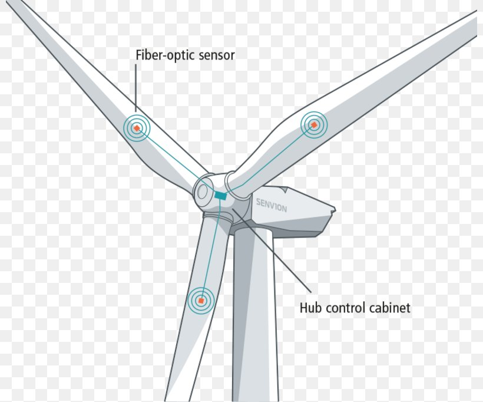
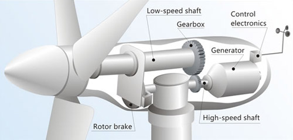
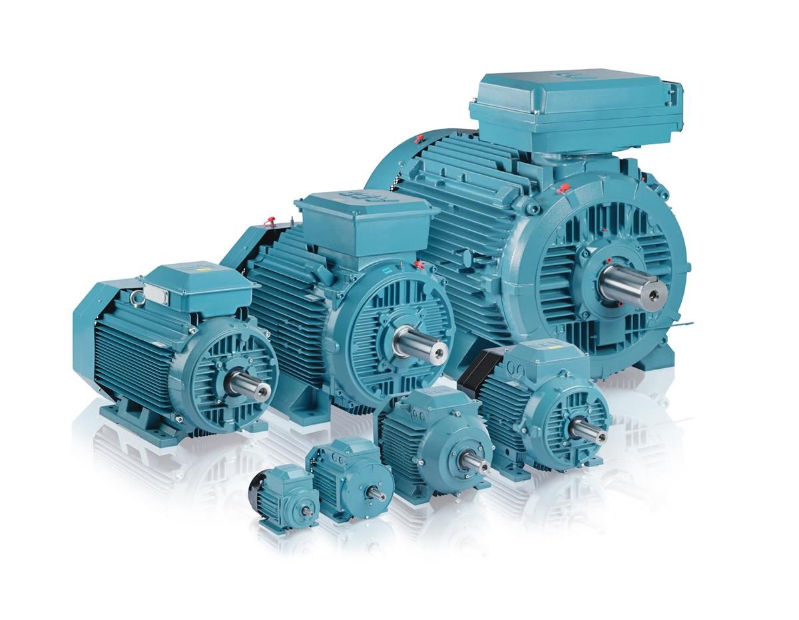
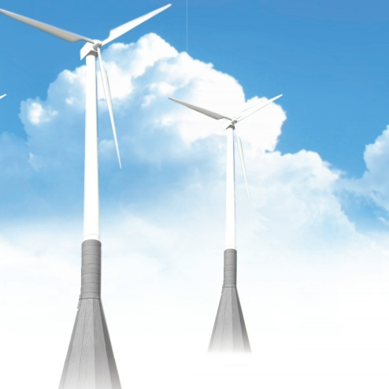

Rotor
Rotor is the most important part of the wind turbine. It is designed such that when the wind blows through the rotor, it rotates and generates mechanical energy. A typical wind turbine uses 3-blades rotor because it is the most efficient design comparing to 2-blades or other design.

Nacelle
Nacelle connects the rotor and the tower. It contains all the key mechanical components for the wind turbine, such as the gearbox, the generator and the converter. Within nacelle, the wind energy harvested by the rotor is converted into electrical power through the generator.

Generator
Generator is the component which converts the mechanical energy into the electrical energy. There are many different generator types available, and the on-going research on the more generator is also very popular. The generator can be classied into synchronous generator and asynchronous generator. And the most popular generator systems used nowadays are the doubly-ged induction generator and the direct-drive generator.

Tower
The height of a horizontal wind turbine can ranges from 40 m to 150 m. The tower height is highly correlated with the rotor diameter. As the wind turbine becomes taller, it can captures high wind that has higher wind speed.
Foundation
For onshore wind turbine, the foundation supports the tower. A proper foundation should be able to support the wind turbine from the wind gust and the natural vibration. For offshore wind turbine, the foudnation goes into the sea base. And the design becomes more complex.